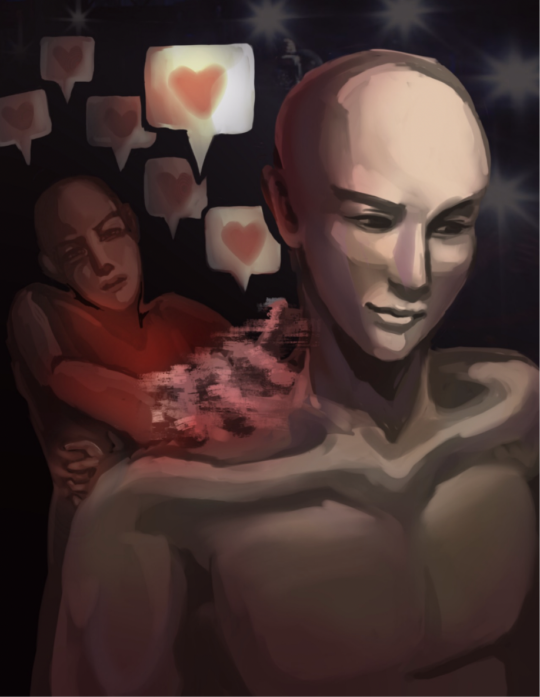

Imagine the rush felt after crushing an interview you were nervous about or acing an exam you barely studied for. Somehow, your excitement is perfectly captured by a familiar image of LeBron James smiling with the caption, “Smiling through it all. Can’t believe this is my life.” It's ridiculous, but it works. Funny and strangely intimate moments like these, when humor becomes the bridge between personal emotion and shared experience, activate neural reward pathways that make fans feel pleasure and excitement. Thinking about today's digital culture, this kind of emotional connection is especially visible in the relationships that fans form with athletes online.
In recent years, professional athletes have transcended the boundaries of the playing field to become content creators, influencers, and social media personalities. This evolving pattern of fans distantly engaging with athletes they have never met has contributed to a deeper and more emotionally invested form of fandom: parasocial relationships. Social media has deepened parasocial relationships between fans and athletes while amplifying risks along the way, blurring the line between admiration and intimacy in a world where every post feels personal.
In 1956, sociologists Donald Horton and Richard Wohl observed that people were forming bonds with television personas and coined the term “parasocial relationship” to describe a one-sided connection in which the person feels attached to a public figure who may not even be aware of their existence (Tukachinsky Forster, 2023). As technology has advanced, parasocial relationships have become more extensive and more intimate. Social media platforms like Instagram, TikTok, and X have transformed how fans engage with athletes, turning distant icons into online personalities who feel deeply familiar. For instance, when you scroll past a Joe Burrow TikTok edit, your brain isn't just amused, it feels personally connected.
More than just hearts on a post, research shows that parasocial interactions can trigger the brain's reward pathways, particularly dopamine circuits, and elicit feelings of pleasure and emotional investment (Fredrick, 2012). These emotions are similar to those found in social relationships and help create a sense of closeness. Mirror neurons also play a role by allowing fans to mentally stimulate the actions and emotions of athletes. These special brain cells activate both when we perform an action and when we observe someone else performing it, helping us “mirror” what we see and imagine the emotions of others as if we are experiencing them ourselves (Kilner & Lemon, 2013). Repeated exposure to entertaining content strengthens these neural connections and reinforces attachment.
Additionally, parasocial relationships in sports are often strengthened by identification and admiration. Fans tend to identify with athletes who share their values or aspirations such as Simone Biles for her resilience and honesty about mental health (Thompson, 2019). Social media amplifies this connection by sharing behind-the-scenes personal content and letting fans feel closer even though the relationship is one-sided. Neuroscientifically, emotionally salient interaction engages oxytocin pathways, also known as the “bonding hormone”, which further enhances feelings of closeness and connection.
While parasocial relationships can bring joy, entertainment, and a sense of community, they also carry risks. Overidentification with athletes may distort self-perception, and many fans may compare their own lives or achievements to the success of professionals. This occurs because the brain's ventromedial prefontal cortex, the area responsible for thinking about ourselves, processes these one-sided relationships in a way that is very similar to real life bonds. When we constantly compare ourselves to these idealized figures, it can trigger the brain's “social pain” centers and lower the release of dopamine, leaving us feeling less satisfied with our own reality (Hoffner & Bond, 2022). The different algorithms embedded into TikTok's For You page and Instagram and X's personalized stream exacerbate this effect by constantly presenting emotionally charged content and encouraging repeated engagement. Over time, fans may develop patterns of compulsive interaction and the need for a “fix” that can only be provided by these relations. This blurs boundaries between healthy admiration and unhealthy dependence, revealing how parasocial bonds can subtly shift from harmless entertainment to a source of emotional overinvestment.
The further challenge we are presented with as a growing society becomes not how to eliminate parasocial bonds, but rather how we understand them. What joy do they offer, and what boundaries need to be put in place to keep admiration from becoming dependence? So, next time you're scrolling and come across a perfectly timed sports edit with the music, the ball, and that familiar rush in your chest, take a moment to pause. It's proof that our brains respond as though the connection is real, even though the relationship isn't.
References
Tukachinsky Forster, Rebecca, editor. The Oxford Handbook of Parasocial Experiences. Oxford University Press, 2023.
Frederick, Evan L., et al. “Why we follow: An examination of parasocial interaction and fan motivations for following athlete archetypes on Twitter.” International Journal of Sport Communication, vol. 5, no. 4, Dec. 2012, pp. 481–502, https://doi.org/10.1123/ijsc.5.4.481.
Kilner, J.M., and R.N. Lemon. “What we know currently about mirror neurons.” Current Biology, vol. 23, no. 23, Dec. 2013, https://doi.org/10.1016/j.cub.2013.10.051.
Thompson, Juwan. “How Parasocial Relationships Between Sports Figures and Fans Influence Fandom and Purchase Intention.” All Theses, vol. 358, 2019.
Hoffner, Cynthia A., and Bradley J. Bond. “Parasocial Relationships, social media, & well-being.” Current Opinion in Psychology, vol. 45, June 2022, p. 101306, https://doi.org/10.1016/j.copsyc.2022.101306.